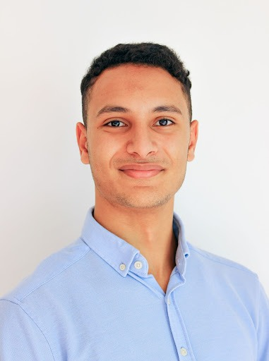
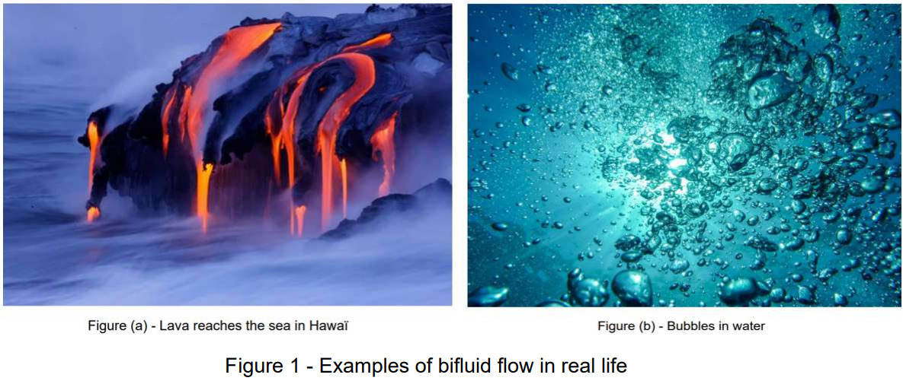

Numerical Modeling of Bi-fluid Flows on Quadtrees
Sammary:
The project is focused on developing a numerical model for bi-fluid flows with fluid-structure interactions, primarily targeting marine energies. It utilizes the Navier-Stokes model for fluid dynamics encompassing both water and air. The model ensures exchange of boundary conditions between fluids, facilitated by the NEOS tool, an open-source library developed by Inria MEMPHIS. The project aims to enhance this tool to handle bi-fluid scenarios using existing NEOS components and couple it with existing Navier-Stokes solvers for a comprehensive simulation environment.
Supevisor: M. Bergmann Michel
Authors:

Bakhkhakh Mouad
Sidi Hida Bahaâ Eddine
